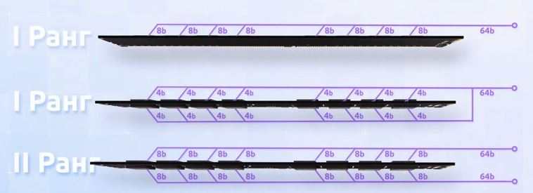

Компьютер
Что стоит учитывать. Прежде всего принцип Паретто 20%усилий-80%результата. Многие выпендрежные компьютерные навороты повышают производительность на проценты или доли процентов. Без нужды оплачивать данный спортивный интерес смысла немного. По большей части всякие сухие и синтетический цифры это пыль в глаза.
Лучше подождать отзывов сообщества и не есть сырой продукт, лучшее враг хорошего.
Для идентификации, особенно при утрате маркировки, удобно использовать CPU-Z\CPU-X или аналоги.
Материнская плата
Материнка это основа сборки компьютера, она во многом определяет остальные компоненты.
Распостраненные размеры по убыванию ATX(30,5х24,4cм), microATX(24,4х24,4cм), miniATX(17х17см)
Чипсет - набор базовых микросхем, основа материнской платы. Чипсет Intel будет работать только с процессорами Intel, а чипсеты AMD — с процессорами AMD.
Характеристики материнки могут отличаться от характеристик чипсета. Иногда, если почитать спецификации чипсета, а лучше и форумы, можно узнать о незаявленной в инструкции работе на более высокой частоте или большем максимальном объеме памяти.
Буквенные обозначения чипсетов
Чипсеты Intel В — начальный уровень, ограниченные возможности, меньше линий PCIe и портов USB(пример B460). Q — корпоративный, аналогичны B, с функциями безопасности и управляемости. H - средний уровень, баланс между производительностью и ценой(пример H470). Z — поддержка разгона, нескольких GPU, больше линий PCIe (пример Z590). X — экстремальной производительности, больше памяти и ядер (пример X299). Еще можно встретить W (Workstation), P (Non-graphics processor\perfomance). Чипсеты AMD A — начальный уровень, дешовые (пример A320). B — средний уровень, баланс цены\производительности, умеренный разгон. (пример B450) X — для игр и разгона (пример X470).
Достаточно распостранены платы под серверные процессоры и память, с целью достичь большей производительности за меньшую цену.
Процессор
Сокет - проприетарный разъем под серию процессоров.
Ядра\потоки позволяют распараллелить выполнение задач. Оптимизация приложений под несколько вычислительных ядер до сих часто выполнена не лучшим образом. Именно поэтому прирост производительности при увеличении количества ядер до трех-четырех далеко не всегда дает ощутимый эффект, а иногда и вовсе его не дает. Либо дает такой, какой может быть скомпенсирован простым увеличением тактовой частоты, что, очевидно, процессорам с меньшим количеством ядер дается легче.
В теории более высокая частота может давать большую производительность, но на практике увеличивается энергопотребление, тепловыделение и процессор уходит в тротлинг/защиту сбрасывая частоты, ибо возможности охлаждения не резиновые.
Есть смысл смотреть не только на частоту процессора, но и на шину, лучше не брать шину меньше чем на материнке, чтобы частота памяти не упиралась в проц. Один и тотже проц на разных материнках может совсем по разному работать, например на старой греться до 60 градусов на старте, а на другой только до 30.
TDP(Thermal design power) - тепловая мощность. Предполагаемое, маркетинговое тепловыделение, в реальности цифры могут отличаться, причем сильно с учетом встроенного авторазгона и встроенной графики. Хотя есть тенденция к более подробному описанию в разных условиях работы.
Современная интегрированная графика на очень хорошем уровне, для обычного использования ее более чем достаточно. Можно экономить взяв процессор без нее, но иметь про запас очень удобно, на случай выхода из строя дискретной.
Обычно поддерживается память одного поколения, иногда двух. Может быть только память с пониженным потреблением или обычная тоже. Может поддерживаться серверная память с коррекцией ошибок.
Буквенные обозначения для intel
Стационарные K - разблокирован множитель. X - extreme, самые мощные. P — без автоматического разгона и с заблокированной встроенной графикой. S — энергоэффективный, достаточно производительный, сниженное энергопотребление и частота. T — высокоэнергоэффективный, низкое энергопотребление и частота. L — энергоэффективные. Мобильные M - мобильный MX — экстремальные мобильные процессоры MQ, QM — Q(quad) 4-ядерные мобильные процессоры HQ - мобильный процессор с высокопроизводительной граффикой E — для встраиваемых систем QE — 4-ядерные встраиваемые процессоры ME — встраиваемые мобильные LE - оптимизированные по производительности встраиваемые UE — оптимизированные по энергопотреблению U — со сверхнизким энергопотреблением для ультрабуков Y — с экстремально низким энергопотреблением для ультрабуков R — в корпусе BGA и с более производительной графикой
Буквенные обозначения для amd
Стационарные G – встроенная графика. В Ryzen 7xxx графика по умолчанию, используется для самой мощной. Т – пониженное энергопотребление, TDP, производительность. E – 6 и более ядер, мощнее T. X – самые высокие частоты и разгон. GE – встроенная графика, пониженное энергопотреблении как ядер процессора, так и графики. Мобильные U – Самые экономичные и низкопроизводительные. H – повышенная производительность и энергопотребление. M – сниженные частоты и высокая экономичность. HS - сочетание повышенных частот и низкое энергопотребление. HX - разблокированный множитель. PRO для корпоративного сегмента, поддержка дополнительных методов шифрования и безопасности.
Для ноута 2 ядра и 4 потока,
при простом использовании до сих пор может хватать,
tdp лучше около 15w.
Мощные процы для обычного ноута это отчасти извращение и выкидывание денег
ибо перегрев и тротлинг - низкая продолжительная производительность.
Мощный проц предпочтительнее в стационарном компе с хорошим охлаждением.
Оперативная память
Разъем под каждое поколение различается, ноутбучная память только для них.
В идеале в одной сборке используют одинаковые плашки, это избавляет от потенциальных проблем.
По размеру есть полноформатная DIMM(высота около 30мм), LP(Low-profile)\VLP(very Low-profile) DIMM(высота около 19мм), ноутбучная SO-DIMM(высота около 30мм). DIMM (Dual In-line Memory Module, двухсторонний модуль памяти)
Обычно объем предпочтительнее остальных характеристик и поколений, погоня за новизной и выжимание процентов производительности за существенные траты удел фанатов.
Сейчас можно встретить кучу брендов оперативной памяти, на деле производителей не так много. Чипы в основном производят hynix,samsung,micron. На их основе другие собирают модули kingston,corsair,patriot,crucial,g.skill,adata,silicon power и т.д.. Noname могут быть неплохи, но их надо тщательно проверять. Например, самсунгу тупо невыгодно продавать заведомый брак и не прошедшие соответсвие модули, а у некоторых на этом может быть построена вся бизнес-модель. Как вариант китайцы из брака собирают рабочие модули продают подешевле, причем аппелируя, что у них де чипы самсунг. По сути основная разница между брендовой и noname это количество брака.
Субъективно износ у оперативки на обычных частотах весьма условный и предпочтительнее взять подержаную брендовую чем новый noname. Если на noname дают гарантию и вы понимаете риск, то почему бы и нет.
Многоканальный режим
Модули памяти через шину 64бит взаимодействуют с контроллером памяти в процессоре, несколько модулей в 1 канале делят ресурс шины между собой. Задача многоканального режима в том чтобы шина памяти была согласована с шиной процессора для синхронной связи. В идеале многоканальность требует одинаковых модулей.
Группировка шин
На примере двух каналов работать это может как сгруппированная(ganged) шина 1 x 128 бит или разгруппированная(unganged) 2 x 64 бит. Они сравнимы с raid0(данные равномерно распределяются по дискам массива) и JBOD(последовательное объединение нескольких физических дисков в один логический, не влияющее на производительность). Заявлено, что ganged обеспечивает максимальную производительность доступа к памяти при работе однопоточных приложений, а unganged режим обеспечивает более высокую скорость для многопоточных задач. На деле разница между ними без использовании специфичного софта и жестких нагрузок в районе погрешности. Подробнее о ganged/unganged лучше почитать в статье.При 4 слотах и двуканале, некоторые производители выделяют слоты памяти цветом, пару модулей устанавливают в слоты одного цвета. Если разделение по цветам отсутствует, то нужно читать документацию материнки. Оптимально для двухканалов и 4х слотов использовать 2(в разных каналах) или 4 одинаковых модуля, иначе система памяти скорее всего перейдет в одноканальный режим.
Предпочтительны железки с двухканалом и хотябы 2 слотами соответственно.
Объем
Объем может быть ограничен как максимальный на 1 планку, так и общий, и сколько поддерживает процессор. При использовании планок разного объема, часть памяти(по наименьшему объему) будет работать в двуканальном режиме, а часть в одноканальном, что снизит производительность, иногда вся память может уйти в одноканальный режим. Если важен только объем, то вполне можно. Часто бывает, что спецификация от производителя сборки\ноутбука\материнки ограничивает максимальный объем больше чем спецификация чипсета. В таком случае максимальная память может быть больше. Хотя с невнятными спецификациями может быть и наоборот.
Пока встречал преимущественно размеры модулей DDR2 до 4ГБ, DDR3 до 8ГБ, DDR4 до 32ГБ, DDR4 до 48ГБ. Есть и больше, но более редкие и дорогие.
Частота
Распостранение получила память DDR SDRAM (Double Data Rate Synchronous Dynamic Random Access Memory — синхронная динамическая память с произвольным доступом и удвоенной скоростью передачи данных).
На примере DDR3-1600 и PC3-12800, 3 поколение, 1600 МГц или Транзакций в секунду, пропускная способность 12800МБайт/c (Пиковая скорость передачи данных при 64-битной шине данных в одноканальном режиме). PC - Pipeline Clock.
Гнаться за частотой стоит оглядываясь на спецификации процессора и шин материнки. Можно использовать в том числе память с частотой больше поддерживаемой, она автоматически подстроится под меньшую частоту шины материнки\процессора\другого модуля. Обычно объем важнее частоты. Можно брать плашки большей частоты, если проц или мать в планах замены, одинаковая\меньшая цена.
Ниже привел различие реальной и эффективной частоты от mihailspesivcev.
Частота контроллера памяти устанавливает предел реальной частоты ОЗУ, например 1333мгц, но у ОЗУ есть такое понятие как эффективная частота, которая и указывается 1333/1600/1866/2133 на модулях памяти, реальная частота всегда в два раза ниже эффективной, а это значит что для шины к примеру 1066мгц - максимально быстрая ОЗУ будет 2133(1066 реальная). Яркий пример, i7 2600 спокойно работает с 2133 памятью при контроллере 1066/1333мгц, в современных UEFI зачастую отображается загруженность контроллера памяти и там отчётливо можно заметить что при ОЗУ 3200мгц, загруженность контроллера 3200мгц указана как 50% то есть в половину от эффективной частоты.
Вольтаж
L в названии, например DDR3L(Low Voltage), означает пониженный вольтаж. Обычно поддерживается либо только стандартный вольтаж либо только пониженный, чтобы понять нужный тип надо смотреть спецификацию материнской платы.
Тайминги
Тайминги влияют на скорость работы, предпочтительны наименьшие. Обычно берут плашки с одинаковым таймингом, иначе они все будут ограничиваться менее быстрым модулем, возможно даже еще большими значениями, которые поддерживают все модули. При необходимости их бывает можно настраивать.
Ранг(rank)
Идея позволяет использовать больше памяти, кратно большее количество чипов на одни контакты, при том же максимальном объеме 1 чипа и количестве модулей. Двухранговый модуль - это два логических модуля, распаянных на одном физическом и пользующихся поочерёдно одним и тем же физическим каналом, загружая 128бит вместо 64бит. Многоранговость переиспользует тот же слот модуля, но одновременно доступен только 1 ранг.
Одноранговые (1R-single rank) плашки оперативки чаще бывают с чипами с одной стороны, изредка с двух(чаще для ноутов), поэтому двуранговость(2R - double rank) лучше проверять спецификацией. Обозначения 1Rх4, 2Rх8, 2Rх16 отсылают к количеству бит на чип, разделив шину модуля 64бита на это значение и умножив на ранг получим число чипов.
Картинки

Обычно можно использовать или только 1 ранговые модули или только 2 ранговые, хотя изредка в некоторых конфигурациях вроде могут работать вместе.
В магазинах ранг могут указывать случайным образом, лучше смотреть спецификации. Процессор\контроллер памяти ограничен суммарным числом рангов памяти, с которыми может работать и рангами на канал.
Рассмотрим 4 слота и два канала, при одинаковой частоте всех планок.
2 ранга(2x1R в разных каналах или 1x2R) вместо 1x1R могут дать прирост скорости,
особенно 2x1R в разных каналах.
4 ранга(2x2R в разных каналах или 4x1R) будут несколько быстрее
2x1R, так как сильнее нагружают контроллер и будут работать на заявленной частоте.
8 рангов(4x2R) будут работать только на пониженной частоте,
т.к. контроллер памяти не резиновый, большая нагрузка.
Но 8 рангов могут позволить достичь максимального объема памяти, ценой меньшей частоты.
2R модуль чуть быстрей 1R, но грузит систему памяти как 2x1R.
Глянув спецификацию материнки( как пример MPG Z690 EDGE WIFI DDR4), можно увидеть нагрузку разных конфигураций на систему памяти, где DPC(DIMM per channel) - модуль на канал.
1DPC 1R Max speed up to 5333+ MHz 1DPC 2R Max speed up to 4800+ MHz 2DPC 1R Max speed up to 4400+ MHz 2DPC 2R Max speed up to 4000+ MHz
Вывод - в идеале для двуканальной материнки предпочтительнее обходиться 1 модулем на канал.
Классические схемы наращивания памяти:
1R+1R | 2R+2R | 1R+1R+1R+1R | 2R+2R+2R+2R(на пониженной частоте).
В отзывах к оперативной памяти можно наблюдать людей неудомевающих почему у них при 8 рангах на 2х канале скорость ниже заявленной или вообще нестабильная работа. Например пишут, что DDR4 работает на частоте не выше 2666 МГц, при заявленной 3200 Мгц.
При одинаковом объеме памяти 1R, 2R какие то бывает стоят существенно дороже, гнаться за ними специально смысла нету.
Распространенными модулями пока являются одноранговые с объемом 8 ГБ. С одной стороны модуля памяти распаяно восемь х8 чипов памяти по 1 ГБ каждый. Двухранговый модуль 16 ГБ из этих же чипов по 1 ГБ получится уже из 16 чипов - по восемь с каждой стороны. Так же есть одноранговые модули 16 ГБ, используют чипы по 2 ГБ. Еще видел 3 Гб чипы, из 16 штук получается двухранговая ddr5 48 Гб.
Диск
Применяются HDD(Hard Disk Drive - жесткий диск) и SSD(Solid State Drive - твердотельный накопитель).
HDD имеет меньшую скорость работы, но предпочтителен для долгосрочного хранения, т.к. если что данные можно будет восстановить. Правда цена такой услуги обычно раза в 4 больше стоимости нового диска, делать бекапы гораздо дешевле. Так или иначе hdd шумит, особенно при наличии износа. Отличаются в основном скоростью вращения и размерами 3,5 и 2,5 дюйма, редко 1,8. 2,5 преимущественно в ноутбуках и внешних дисках. Разница скорости для обычыного пользователя весьма условна, а цена может отличаться значительно. Дополнительно стоит почитать статью о технологии SMR.
Для высокой скорости работы лучше брать ssd. Безшумный, но обычно данные с него не восстанавливаются.
У хороших производителей диски достаточно долговечны, при неактивном использовании живут десятилетиями, но их ресурс всегда ограничен. Для ноутбука обычно предпочтителен ssd, вероятность навернуть hdd от поездок(тряски, падений) выше. Для стационарного хорошо использовать под систему и программы ssd, а под данные hdd.
В SSD распространены типы чипов памяти NAND, отличающиеся количеством бит на ячейку: QLC(4бита), TLC(3бита), MLC(2 бита) и SLC(1 бит). С увеличением числа бит на ячейку, уменьшается скорость, ресурс\надежность, цена. Тоесть порядок предпочтения SLC > MLC > TLC > QLC. Помимо плоских 2D ячеек, выпускают 3D ячейки для большей плотности. Заявляется, что 3D NAND во всем лучше 2D.
На практике SLC идет только в сервера, MLC обычно дороговат, покупку QLC отбрасываем из-за малого ресурса. В итоге цена\качество это TLC, 3D TLC предпочтителен, поэтому их на рынке больше всего. Что интересно производители заявляют у QLC такой же ресурс как у TLC, это выглядит странно.
Градации скоростей обычно не существенны и ssd стоит выбирать по интерфейсу подключения, по TBW(Total Bytes Written - суммарный объем данных, который гарантированно можно записать) и DWPD(Disk Write per Day - допустимое количество перезаписей всего объема накопителя в день). Правда в дешевых дисках обычно сильно быстрее помирает контроллер и цифры TBW больше маркетинг.
Шибко скоростные nvme ssd могут не слабо греться под нагрузкой. При высоких требованиях к ssd может быть смысл посмотреть 3D TLC корпоративного класса.
Производители NAND Flash: Samsung, SK Hynix, Kioxia(Toshiba), Western Digital (SanDisk), Micron(Crucial).
Важной частью ssd помимо памяти является контроллер, от которого напрямую зависит производительность и надежность. Бренды могут часто менять в рамках одной модели контроллер и память, особенно в дешевых моделях. Что вы можете узнать разве что из отзывов или после покупки. В дешевых ssd теперь преимущественно используются контроллеры: Phison, Silicon Motion, Realtek, Maxiotek, Marvell, Yeestor. Субъективные предпочтения Marvell|Samsung>Silicon Motion>Phison|Maxiotek>Realtek|Yeestor. Статья про контроллеры.
Посему самое важное при покупке дешевого ssd это длительная гарантия, например хотябы 3 года, причем в текущей ситуации, когда не понятно возможно ли взаимодействовать напрямую с производителем (присутсвует ли он в стране официально), речь о гарантии от продавца. Если выбирать из гарантии 1 год, то лучше предпочитать ssd от производителей NAND. Что занятно в разных магазинах может быть разная гарантия на одни модели. Гарантию от продавца иногда можно посмотреть для понимания надежности ssd.
Сейчас предлагается много памяти дешево и большого объема, однако достигается это не только за счет прорывных решений(например 3D NAND), но и за счет снижения производительности и надежности(например QLC или SMR). В любом случае если информация не бекапится(хранится на 1 диске), особенно на ssd, значит она не важна.
Видеокарта
GPU(grafical prossesing unit или видеокарта\видеоядро). Бывает итегрированная в процессор и дискретная, отдельным модулем. Текущая интегрированная графика позволяет для большинства задач не использовать дискретную. В ноутбуке предпочтительный вариант, но надо учитывать что используется оперативная память, которую лучше иметь с запасом. Зачастую удобно иметь интегрированную про запас, на случай неисправности дискретной.
Для не требовательных задач дискретные видеокарты есть бесшумные с радиаторным охлаждением. При выборе видеокарты надо учитывать возможности блока питания, мощность больше 75Вт требует дополнительные провода. В мелких корпусах надо четко понимать, что видеокарта влезет, иначе придется подпиливать корпус.
Тяжелые видеокарты могут провисать в горизонтальном положении, иметь плохой контакт, стандартное крепление не прям на них рассчитано. Как вариант держать корпус так, чтобы видеокарта вертикально лежала на разъеме.
Корпус
Размеры отличаются в пределах категории, но устоялись такие градации:
Smaller FF (плата Mini-ITX)
Mini Tower (плата MicroATX)
Mid Tower (плата ATX)
Full Tower (плата EATX)
В большой корпус можно поставить и маленькую плату, по сути размер определяет сколько можно запихнуть дисков, вентилляторов, слотов расширений и видеокарт. Качественные корпуса более продуманы и удобны в использовании.
Full Tower для обычного использования избыточен. Если нет понимания, что нужна куча перефирии, дисков и видеокарта, то лучше брать минимальный размер, например неттоп. Корпуса большего размера хороши тем, что с ними проще адаптироваться под меняющиеся задачи и комплектующие. Они нужны для работы с большими объемами данных, профессиональной работы с графикой, игр.
Охлаждение
Самый предпочтительный вариант это радиатор из меди или алюминия, поскольку бесшумный, но подходит маломощным устройствам. Большие и сложные радиаторы обычно дороги, проще добавить вентиляторы. Когда недостаточно воздушного охлаждения, используют жидкостное.
Термопаста
Функция термопасты не отводить тепло, а убрать микротрещины и воздушную прослойку между процом и радиатором для более плотного соприкосновения и как следствие лучшей теплоотдачи. Если радиатор не шевелить, конструкция может быть очень долговечна.
Можно использовать любую термопасту, важно наносить ее минимальным слоем.
Самый простой вариант использовать кпт-8, не хуже большинства аналогов.
Еще вариант использовать кпт-19. Термопаста КПТ-19, в отличие от термопасты КПТ8 , имеет немного большую теплопроводность и меньше сохнет в процессе эксплуатации, дольше служит и не теряет своиx свойств. , имеется процент металлических частиц.
Часто можно встретить советы использовать термопасту arctic mx-4, но истории про постоянную замену термопасты из за засыхания или лучшей теплопроводности для обывателя больше похожи на развод. Без очень мощных, горячих сборок нет смысла переплачивать.
Из производителей часто рекомендуют от пайки и монтаж или solins.
Хорошая статья про термопасты.
Разгон
Разогнать обычно можно, но зачем? Преимущественно для любителей шума и излишнего тепла, об отведении которого стоит заранее позаботится.
Интересной обратной стороной является занижение вольтажа(undervolting), позволяющий получить более низкое тепловыделение и избежать тротлинга.
Процессор с заблокированным множителем невозможно гнать традиционно, однако материнка может позволять увеличивать частоту шины и настраивать напряжение, что менее эффективно и связано с повышенным риском нестабильности и повреждения.
Чтобы гоняться за частотой памяти и таймингами, нужно понимать топологию и нагрузку на систему памяти. Пример статьи для погружения в тему.
Ноутбук
Если не важен вес, то крайне не рекомендую ноутбуки с малым количеством портов, формата ультрабук, которые принуждают использовать дополнительную плату расширения портов. Мало ноутбуков сейчас имеют сетевой порт rj45, а для стационарного использования это субъективно сильно лучше wifi.
Важно брать ноутбук без видеокарты и с маленьким базовым tdp процессора, 15W (например у core i5-7300u или ryzen 3 2200u) идеально, меньше 16ГБ оперативки брать не стоит.
На ноутбуках всегда охлаждение сильно хуже стационарного ПК, мощный процессор или видеокарта будет сильно греться и сбрасывать частоты при продолжительной нагрузке, поэтому мощное железо на ноуте отчасти "выкидывание" денег. Например для процессоров, сейчас можно посмотреть не только базовый tdp, но и максимальный\turbo. Подумать о том как охлаждать больше сотни Вт только от процессора, для чего в стационарном компе как минимум стоит большой радиатор с вертушкой. Для такого насилования покупают внешнее охлаждение в виде подставки с вентиляторами, если в корпусе мало отверстий можно его частично разобрать или насверлить самому. Если так или иначе хочется все сразу - нужен "игровой ноут", предпочтительны модели использующие алюминевый корпус как радиатор. Зачастую после приобретения мощного ноута для серьезных нагрузок все равно придется собирать полноценный стационар.
Периферия
Использование беспроводных устройств на деле, хоть и избавляет от проводов, но приводит к их усложнению, необходимости их заряжать, возможным конфликтам устройств. Провода, особенно толстые, это стабильно и надежно.
К ноутбуку удобно иметь большой монитор, полноформатную клавиатуру и внешний микрофон.
Износ
Механический износ часто актуален для портов. Если было жесткое превышение температурного режима, это скажется как минимум на сроке службы электролитических конденсаторов, что обычно актуально для мощных сборок. В ноубуках часто выходит из строя аккумулятор.
Подержанные
Если нет требовательных задач, для просмотра документов, фильмов и браузера брать новый это нехилая переплата, за которую можно взять пачку подержанных. Новые условно в два раза дороже, гарантия часто всего год, а техника может жить долго, например у меня лет по 20. Подержанные компьютеры проще всего купить на авито. Сайт https://www.nix.ru/ мне нравится возможностью удобно смотреть архивные модели, которых нет в продаже, для понимания, что стоит смотреть на авито.
Компьютер или отдельные комплектующие нужно тщательно проверять перед покупкой.
Built on GitHub with MkDocs and Pure theme